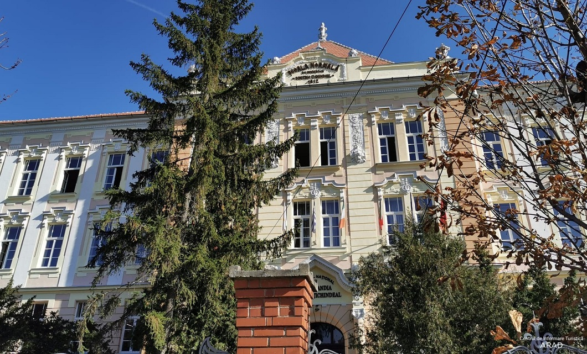

Colegiul Național ,,Preparandia Dimitrie-Țichindeal" Arad
Aradul, situat în extremitatea vestică a României, atestat documentar pentru întâia dată în secolului XI, este în prezent unul dintre importantele centre economice, culturale
și social – politice din țară, poartă feroviară și rutieră spre și dinspre apusul Europei.Fiind amplasat la o altitudine medie de 110 m, pe malul râului Mureș , Aradul ni se
descoperă ca un loc pitoresc, deținător al unei însemnate istorii presărată cu evenimente demne de un oraș cu o vechime de aproape un mileniu. Secolele XVIII– XIX și începutul
secolului XX, au fost destul de dificile pentru locuitorii români de pe aceste meleaguri, aflate multă vreme sub stăpânire austro-ungară, secole caracterizate de lupte acerbe
pentru dobândirea drepturilor social-politice, religioase și culturale. În toată aceasă vreme, și bineînțeles și mai târziu, Aradul a fost unul dintre principalele centre de
cultură ale românismului. Una dintre instituțiile cultural – pedagogice care a dat prestigiu cultural Aradului a fost Preparandia înființată în 1812, cea dintâi școală de
pregătire a învățătorilor în limba română de pe întreg întinsul Imperiului Habsburgic și din întreg spațiul românesc, dar și între primele instituții de acest fel de pe continent.
Înființată cu acordul împăratului Francisc I al Austriei (1792 - 1835), prin rezoluția imperială din 9 februarie 1911, reluată în seprembrie 1811 și octombrie 1812, școala își
deschide cursurile în mod solemn, într-o zi de duminică, 15 noiembrie 1812, în Catedrala ortodoxă română, unde participă apoximativ 1000 de persoane. Dintre aceștia amintim pe
cei patru profesori ai școlii: Dimitrie Țichindeal (1775 - 1818), Constantin Diaconovici Loga (1770 - 1850), Dr. Iosif Iorgovici (1792 - 1820) și Ioan Mihuț (1755 - 1830), și
cei 78 de elevi. Primul director al Preparandiei din Arad a fost Dimitrie Țichindeal, preotul satului Becicherecul Mic din județul Timiș, cel care s-a luptat cel mai mult pentru
înființarea acestei școli.Cei patru profesori vor preda, pentru un curs complet de 6 luni, următoarele discipline: catehismul, cântarea bisericească, ritualul slujbelor (Dimitrie
Țichindeal), pedagogia, metodica și istoria (Ioan Mihuț), gramatica românească și epistolografia, adică arta întocmirii scrisorilor și a altor acte oficiale (Constantin Diaconovici
Loga), geometria, aritmetica, geografia și limba germană (Iosif Iorgovici). Predarea se făcea în limba română, iar la sfârșitul fiecărui semestru se susțineau examene publice.
Cheltuielile necesare întreținerii și funcționării Preparandiei sunt suportate de credincioșii creștini ortodocși de pe întinsul întregului județ Arad, care organizau duminica colecte
în fiecare biserică.Școala Pedagogică din Arad a rămas ca o școală de stat ,,regească” de la înființare până în anul 1869, an în care devine școală confesională, trecând sub patronajul
și sub jurisdicția Episcopiei Ortodoxe Române a Aradului. Din anul 1876, Preparandia se unește cu Institutul Teologic Ortodox Român, înființat în 1822. Preparandia, în cadrul acestei
noi instituții nu a dispărut, ea a rămas de sine stătătoare,precum Institutul Teologic. Noua instituție apărută în 1876 s-a definit și prin faptul că cele două școli care au fuzionat au
avut un singur director și un singur corp profesoral. Institutul Pedagogic –Teologic rămâne astfel până în 1927, deși din anul 1919 denumirea Preparandiei se schimbă în Școală Normală.
Din 1948 se va numi Școală Pedagogică, din 1966 Liceu Pedagogic, iar din anul 2012, cu ocazia serbrării bicentenarului, primește denumirea de Colegiul Național ,,Preparandia – Dimitrie
Țichindeal”.La realizarea marelui vis de veacuri al românilor, unirea într-un singur stat unitar, concretizat la Alba-Iulia în 1 decembrie 1918, Preparandia arădeană a avut un aport
covârșitor, întrucât miile de învățători,învățătoare și educatoare s-au format sub semnul unirii, ca un ideal de neînfrânt realizat prin luminare, educație, cultură și școală.
Până în prezent școala pedagogică arădeană a rămas tributară valorilor fundamentale ale spiritului iluminist european, în cadrul căreia s-a format, precum: libertate, armonie, integritate,
performanță, colaborare,
profesionalism și respect.
Echipa noastră
Povestea PedaTv a început în anul 2022. Membrii echipei, elevi, coordonați de profesori își doreau
să reușească ceva indeit, chiar dacă drumul era unul anevoios, plin de necunoscute.
Cu mult entuziam au început
să realizeze emisiuni, familiarizându-se cu tainele televiziunii.
În prezent echipa este formată din 30 membri profesioniști care reușesc să aducă în prim plan cele mai importante
evenimente din cadrul Colegiului Național ,,Preparandia-Dimitrie Țichindeal" Arad.